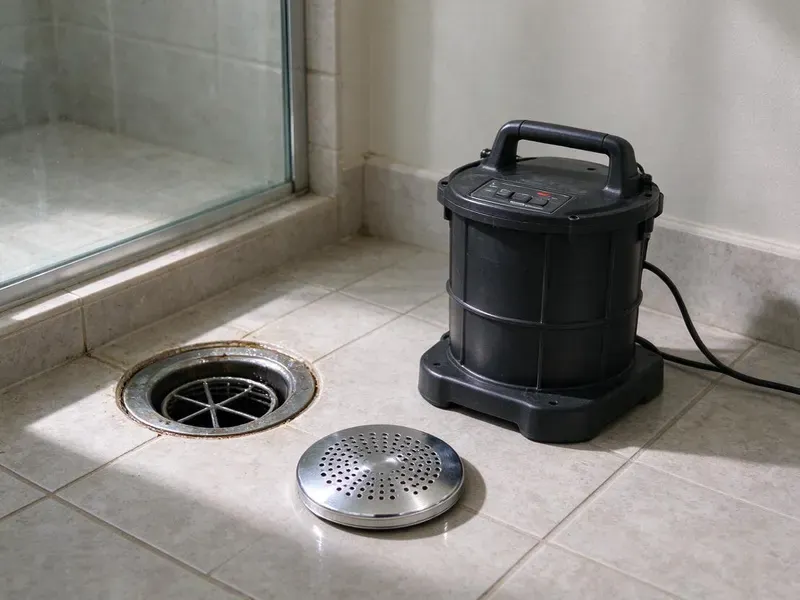

Drain Jetting in Holland, MI
Kitchen line coated in grease in Holland, MI? Our techs jet it clean from the cleanout to the main.
- Hose Sized for Branch Lines
- Price Before We Start
- Fewer Repeat Clogs
- Quick Scheduling

Stop the Repeat Kitchen Clog in Holland, MI
A slow kitchen drain will keep getting worse. Call CHV Plumbing before it backs up.
Drain Jetting for Holland, MI Homes
CHV Plumbing recommends jetting when grease, soap and hard water scale keep coating the same line. Cabling buys weeks, while jetting cleans back to bare pipe and buys much longer. The pipe opens up.
Work we handle every week:
- Grease, scale and root removal
- Strips grease, sludge, roots and scale
- Camera checks before and after on older pipe

Additional Drain Services Services in Holland, MI
From stubborn kitchen clogs to main sewer backups, our drain services in Holland, MI clear the line and keep it clear with camera-verified results.


Customers
Why Choose CHV Plumbing for Drain Jetting in Holland, MI?
Older plumbing collects decades of buildup. In Holland, MI, plenty of homes still run galvanized or cast iron branch lines that have narrowed to half their original opening from scale and grease. A jetter restores most of that. We learn how much wall is left while we are at it.
- Branch Line Gear, Hose and nozzles built for 1-1/2 and 2 inch drains, not just sewer mains.
- No Harsh Chemicals, Water does the work, which is easier on pipe than caustic drain openers.
- Fewer Repeat Calls, A jetted line stays clear far longer than one that was only cabled.
Citywide Coverage
Every neighborhood in Holland gets drain jetting from CHV Plumbing. Commercial kitchens, older houses and newer tracts all clog for their own reasons. Every type is routine.
Experienced Team
Our techs are trained on every jetter we own. They know pressure limits for old pipe and when to stop and scope instead of forcing it. Experience counts here.
Safety-First Approach
We follow local plumbing code on every jetting job in Michigan. Gear, controlled pressure and floor protection keep things clean and safe. Setup is careful.
Trusted Certified Holland Plumbing Services Professionals
At CHV Plumbing, we take pride in licensed, certified plumbing services throughout Holland, MI. Credentials matter in this trade. Every repair, install and maintenance visit follows strict safety and quality rules, and the plumbers doing the work carry recognized industry credentials.
Call Us Now PHCC Plumbing Contractor Recognition
PHCC Plumbing Contractor Recognition Better Business Bureau (BBB) Accreditation
Better Business Bureau (BBB) Accreditation Angi Certified Pro
Angi Certified Pro ISO 9001 Quality Management Certification
ISO 9001 Quality Management CertificationDrain Jetting Work We Handle in Holland, MI
Jetting Kitchen and Bath Lines at Home in Holland
Grease in the kitchen, hair in the shower, scale in the tub drain. Setup happens at a cleanout or the trap arm, with pressure set for the pipe in your walls. Fragile lines get less pressure. Cast iron and clay that collect sediment respond well to a slower pass with a rotating nozzle.

Scheduled Drain Jetting in Holland, MI
Some lines are going to clog again. Rough old cast iron and lines with known root entry will build up again regardless of habits. Planned visits cost less. We set a schedule based on how fast your line built up the first time.
Scale and Sludge Removal in Holland
Lake-sourced municipal water in Michigan is moderately hard, so scale gradually builds up in water heaters and fixtures. Over the years, minerals settle as hard scale on the inside of drain pipe, and soap, detergent and organic sludge stick to that rough surface until the opening shrinks. Rotating nozzles knock scale loose. Sludge washes right out. We can show you the before and after on video.
Storm Drain Jetting in Holland
Yard drains and area drains clog with silt. Backwater valves and well-maintained sump pumps are among the most effective defenses against flooded basements. Leaves, sand, roof grit and lawn clippings settle in the low spots of buried storm pipe until water starts pooling against the foundation after a heavy rain. We use more flow on storm lines. Checking the downspout connections is part of the visit.
Emergency Drain Jetting in Holland
Water coming up a floor drain is not a wait-until-Monday problem. CHV Plumbing sends a tech with a jetter and a cable machine. We often open the clog with a cable and then jet the line so it stays clear. Same-day is common. Let us know on the phone where the water is showing up.
Floor Drain and Utility Sink Jetting in Holland, MI
Garage floor drains get forgotten. Sand, paint rinse and dirt settle in the trap and line until a big rinse floods the floor. We jet both. We also check the trap seal or primer to keep sewer gas out.
Maintenance Jetting Programs in Holland, MI
Regular jetting costs less than repeat emergencies. For a property with a history of repeat clogs, root entry or hard water scale, we set a cleaning interval and put it on the calendar so the line never gets back to the point of backing up. Restaurants often go quarterly. We keep records of each visit for your files.

Laundry Drain Jetting in Holland, MI
Washers send lint, softener residue and grit down the standpipe. Over time that builds into a gray sludge that slows the standpipe until water overflows the top during the spin cycle and runs behind the machine. We jet it out. We also check trap size and venting. Add a lint trap to the hose for longer results.
Local Drain Line Jetting in Holland, MI
Searching for drain jetting near you in Holland, MI? CHV Plumbing has techs with jetters on the trucks every day. That means we can often get to a slow or plugged line the same day, and we bring both a cable and a jetter so the visit does not turn into two. Being nearby helps.
Being close by matters for repeat clogs. When a kitchen line needs jetting every year, it helps to have a crew nearby that already knows your pipe, your cleanout location and how quickly your line builds back up. CHV Plumbing works Holland daily. Scheduling is easy.
CHV Plumbing at a Glance
- Licensed and insured plumbers serving Holland, MI
- Same-day appointments and 24/7 emergency response
- Clear written estimates, no hidden fees
- 4.9-star rated by 670+ Michigan customers
Holland Map
Holland Information
- Population
- 34,540
- Area codes
- 616/269/947
- Service area
- Holland and communities within 40 miles
- Nearby
- Wyoming, Grand Rapids, Kentwood, Muskegon
Roots chase moisture into sewer joints, and moving ground opens those joints wider under Holland, MI homes. Freeze and thaw cycles move the soil around buried pipes, which can crack older clay and cast iron sewer laterals.
Expert Services
Reach out to CHV Plumbing for honest, reliable plumbing from people who know the trade in Holland, MI.
Our Specialized Plumbing Services in Holland, MI
At CHV Plumbing, you get every kind of plumbing service from one company across Holland, MI. We go from leak detection all the way to full system installations, for homes and commercial buildings, and we do it quickly at a fair price. Here are the core services we offer:


Start to Finish: Drain Jetting in Holland, MI
Every jetting job in Holland, MI follows the same sequence, setup, inspect, jet and test.
Call for a Price
Call (810) 380-5918 and tell us which drains clog and how often. We give you a price range.
Set Up and Look
We cover the floor and look at the pipe. That sets the pressure and nozzle.
Jet and Test
The line is jetted until it runs clean. Then we test each fixture.
Frequently Asked Questions About Drain Jetting in Holland
Typical pricing in Holland, MI falls between $250 and $800. Heavy root removal, long main lines and commercial kitchen jobs sit at the top of that range, while a single kitchen branch with a nearby cleanout sits toward the bottom. Written estimate first.
Every year or two works for most homes in Holland. Big trees or a grease history can mean yearly jetting, and restaurants more often. We will suggest an interval.
Yes, root cutting is a routine part of jetting. Spinning cutter nozzles chew through dense root masses, and the water then flushes the pieces down to the main, which is common work in established neighborhoods. Scope it afterward.
Same idea, different scale. Drain jetting is small lines with compact gear, and hydro jetting is mains with bigger units.
Yes, for most pipe in decent shape. Old or cracked pipe gets a camera check and reduced pressure, since damaged pipe can get worse. Some pipe should not be jetted.
No permit for jetting itself. Permits only come into play if we need to repair or change the plumbing.
Done right, jetting is safe on PVC, cast iron and clay in decent shape. Very old, heavily corroded or broken pipe may not handle the pressure, which is why we run a camera first when there is any doubt about the line. We turn it down for fragile pipe.
Usually not, since jetting is maintenance on existing pipe. Any repair the jetting uncovers might need a permit, which we pull. We will tell you up front.
What People Are Saying About Our Plumbing Experts?

Sofia M.
Two new toilets went in during one visit. The tech set them on new wax rings and swapped the old supply lines. He also noticed our bathroom faucet dripping and replaced the cartridge while he was there. No mess left behind.
Toilet Installation · Kentwood, MI
Brian W.
I smelled gas behind the dryer and called right away. The plumber found a corroded flex connector, replaced it, and pressure tested the whole line before turning the gas back on. He let me watch the gauge hold steady for fifteen minutes.
Gas Line Repair · Muskegon, MIGreg S.
I manage a small strip center with six tenants. CHV Plumbing handles our annual backflow testing and fixed a recurring clog in the shared sewer line that had been backing into the nail salon. Their reports come in clean and on time.
Commercial Plumbing · Kalamazoo, MI
Kevin O.
Before buying our house I paid for a sewer camera inspection. CHV Plumbing found a belly in the line that held standing water about forty feet from the cleanout. We used the video to get the sellers to fix it before closing.
Sewer Camera Inspection · Holland, MIJames P.
Our restaurant had a slow leak at the hand sink that was rotting the cabinet base. CHV Plumbing came in at six in the morning before prep, replaced the trap and both supply lines, and was packed up before my first cook clocked in.
Commercial Plumbing · Kentwood, MIMark T.
The floor drain in our office break room backed up every few weeks. The plumber ran a cable, then put a camera down and found roots at a joint about thirty feet out. Seeing it on the screen made the decision easy.
Drain Cleaning · Portage, MI